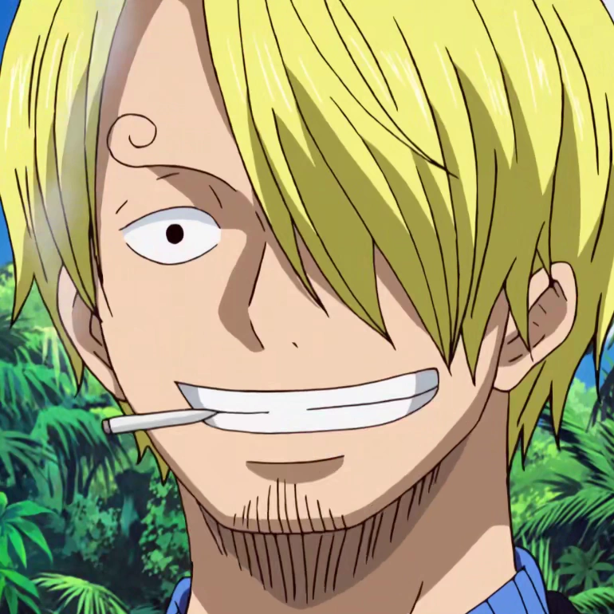

Sanji
Conocido como "Pierna Negra", es el cocinero de los Sombrero de Paja y uno de los tres combatientes más fuertes de la tripulación. Su sueño es encontrar el legendario mar "All Blue".
Historia y Unión
Nacido en el North Blue como Vinsmoke Sanji, huyó de su abusiva familia (el Germa 66) siendo un niño. Tras casi morir de hambre en una roca en el mar junto al pirata Zeff "Pierna Roja", ambos fundaron el restaurante flotante Baratie en el East Blue. Luffy, impresionado por la comida y el carácter de Sanji, lo invitó a unirse a su tripulación tras defender el Baratie de los piratas de Don Krieg.
Aspecto

Es un hombre alto y delgado. Siempre viste de traje (generalmente negro, aunque varía). Su rasgo físico más notorio son sus cejas extrañamente rizadas en forma de espiral. Además, su cabello rubio siempre le cubre uno de los ojos. Casi siempre se le ve fumando un cigarrillo.
Habilidades
- Estilo Pierna Negra: Un arte marcial enseñado por Zeff basado exclusivamente en patadas, para que las manos del cocinero nunca sufran daño en combate.
- Diable Jambe e Ifrit Jambe: Mediante fricción y velocidad, calienta sus piernas hasta incendiarlas, aumentando drásticamente su poder destructivo y quemando a sus oponentes. Su técnica suprema genera llamas de color azul (Ifrit Jambe).
- Mejoras Genéticas y Haki: Recientemente despertó su exoesqueleto genético latente, otorgándole una piel invulnerable y regeneración acelerada. Es especialista en Haki de Observación.
Sanji

Rol: Cocinero
Apodo: Pierna Negra
Recompensa actual: 1.032.000.000 Berries
Lugar de origen: North Blue